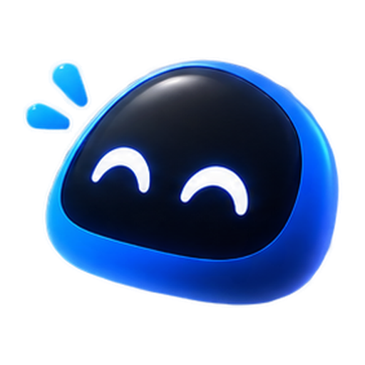

A little more at the top.
Music, lyrics, timers and files, right at the top of Windows. Hover when you need them. When your desktop gets crowded, Nadi makes itself small.
- we fold the summer light
- into paper birds tonight
- and send them through the sky
- to find you by the sea
- every wing a little song
- that carries us along
A few things you need, one hover away.
Move your cursor to the notch and it opens. Pick what you need, then move away to close it.
Your music, up top
See the track Windows is playing, then pause, skip or seek without hunting for the player window.
Lyrics, line by line
Open lyrics beside the album art. The current line follows the music, and you can jump to a line when timing is available.
Pomodoro, without another window
Start a focus session, check how much time is left, and take a break when the timer ends.
A reminder to drink
Pick your bottle size and reminder hours. Tap Drink to log a glass; Nadi keeps count for the day.
Files, within reach
Drop a file onto the notch and leave it there for later. The original file stays in its folder.
To-do, with a little nudge
Add a task, set a time and check it off when you're done. Nadi can remind you when it's due.
Small Windows alerts
Change the volume or brightness and see a quick overlay. Caps Lock and keyboard language changes can show up here too.
Power and connection
Check battery and charging at a glance, with small notices for supported connection changes.
Pray Reminder
Choose your city, see today's prayer times on a sun arc, and turn reminders on if you want them.
Copy it once. Find it again.
Recent copied text sits beside your Shelf, ready to copy again when you need it.
Widgets
Pick two things to keep an eye on: your week, water, battery, a world clock or a countdown.
Today and notifications
See your tasks and the week ahead in Today. Windows notifications need a supported packaged build and your permission.
It knows when to stay small.
Leave Nadi alone and a pair of eyes takes over. After a while, they rest. Come back and they wake up.
Quiet when idle
Nadi reduces redraws when nothing changes. It's still being tested across different Windows setups.
Your files stay yours
Tasks, water logs and Shelf entries stay on your PC. You don't need an account to use the app.
Built for Windows
Nadi is a native Windows app. It can move aside for full-screen apps and adapt when your desktop gets busy.
No browser hiding behind the notch.
Nadi is written in Rust and uses Windows APIs directly. There's no browser window running underneath it.
- Built with Rust. A Windows app, not a web page wrapped as a desktop program.
- Less work when idle. Nadi slows down updates when the screen isn't changing.
- Uses Windows events. Music and power changes come from the system where available.
- Files stay in place. Shelf keeps references instead of moving the originals.
Set it up once.
Open Nadi from the system tray. Choose its size, where it appears and which reminders you want.
Tray icon, bottom right of your taskbar
Start with Windows
Turn this on if you want Nadi to start when you sign in to Windows.
Nadi Mascot
Show Nadi's eyes when it's resting. They'll wake up when you return.
Minimal notch
Keep only a small handle on screen when space is tight. Hover to bring the notch back.
About & Exit
Check the version, change settings or exit from the tray.
On the way to Nadi 1.0.
The first version is still being tested. Here's what's taking shape, and what still needs work.
Taking shape
- Pray ReminderLocal prayer times, a sun arc and optional reminders.
- PomodoroA focus timer with a clear view of the time left.
- Clipboard and ShelfRecent text and dropped files, close to where you work.
- WidgetsChoose two things to keep in view.
- TodayTasks and a weekly view, with Windows notifications where supported.
- Status ringBattery or water progress around the clock.
- Floating and GlassA floating layout and a glass-style finish.
- Music and lyricsPlayback controls and timed lyrics for Windows media sessions.
- To-do and calendarTasks, reminders and a calendar tied to the same list.
Still being tested
- Idle performance and power use on different PCs.
- Motion between Closed, Resting and Expanded.
- Volume, Caps Lock and brightness HUDs on real hardware.
- Startup and system tray behavior.
- Album art and lyrics across different media players.
- Multi-monitor, fullscreen and high-DPI layouts.
Good to know
Today can show tasks without notification access. Reading Windows notifications needs app packaging, permission and further testing.
These are development features, not a list of finished release promises.
Download Nadi
There isn't a public installer yet. I'm testing Nadi on Windows 10 and 11 before the first release.
Want a note when it's ready?

Keep Nadi going.
Nadi will be free. If you want to help me keep working on it, you can leave a small tip.
![PayPal]() International
☕ Saweria Indonesia
🍵 Trakteer Indonesia
❤️ Ko-fi International
International
☕ Saweria Indonesia
🍵 Trakteer Indonesia
❤️ Ko-fi International
Tips help cover testing, builds and the work that goes into each release.
Found something odd?
Feedback isn't open yet. I'll add a way to report bugs when public testing begins.
A note before the first release.
From Nadi Lab
I'm building Nadi as an independent Windows project. It's still changing, and I'd rather test it properly than call it finished too early.
Different PCs, display scales and music players don't always behave alike. I'm still working through those differences before the public installer is ready.
There's no public download or checksum yet. When Nadi is ready, the official link and file fingerprint will appear here. Please don't install files passed around as "Nadi" from unknown sources.
Development builds are provided as-is. If you test one, keep backups of important files and don't rely on it yet for critical reminders.
Questions
Is Nadi free?
Yes. Nadi is being built as a free app, with no subscription or paid features.
Which music players work?
Nadi uses the media sessions Windows exposes. Spotify and many browser players can work, depending on the app and its playback support.
Why doesn't a song have lyrics?
Nadi looks up timed lyrics through LRCLIB. Some tracks don't have a match, especially new releases or local files.
Will it slow down my PC?
It's a native Rust app designed to do less work while idle. I'm still testing performance on different PCs before release.
My antivirus flagged the installer. Is it safe?
Unsigned development builds may trigger a Windows warning. Don't ignore an antivirus alert just to install Nadi; use official builds and check release details when they are published.
How do I update?
Public update instructions will be posted here when the first installer is released.
How do I quit or stop it starting with Windows?
Open the Nadi icon in the system tray. Choose Exit to close it, or turn off Start with Windows in Settings to stop it launching at sign-in.
Privacy
Join the waitlist and your email is stored to manage signups and send release news. The public counter shows a number, not anyone's address. Tasks, water logs, Shelf entries and settings stay on your PC.
Prayer times use the city you choose. Clipboard and focus history stay on your computer.
Windows notification access is not active in the classic installer. A supported packaged build will require permission; Today only keeps generic indicators in memory.
To find lyrics, Nadi may send the song title, artist and duration to LRCLIB. It does not send your tasks or Shelf files there.
Nadi is planned to stay free. No account or subscription is required to use it.